Contents
Double Integrator Reach-Avoid Via Dynamic Programming
This example will demonstrate the use of SReachTools to solve a terminal-hitting time stochastic reach-avoid problem using dynamic programming. We consider a stochastic continuous-state discrete-time linear time-invariant (LTI) system. This example script is part of the SReachTools toolbox, which is licensed under GPL v3 or (at your option) any later version. A copy of this license is given in https://github.com/unm-hscl/SReachTools/blob/master/LICENSE.
In this example, we analyze the following problems via dynamic programming for a stochastic system with known dynamics:
- stochastic viability problem: Compute a controller to stay within a safe set with maximum likelihood
- the terminal-hitting time stochastic reach-avoid problem: Compute a controller that maximizes the probability of reaching a target set at a time horizon, N, while maintaining the system in a set of safe states
- stochastic reachability of a moving target tube: Compute a controller that maximizes the probability of staying within a target tube (a collection of time-varying safe sets)
SReachTools has a dynamic programing implementation that can analyze systems upto three dimensions. For efficient implementation, we require the input set to be an axis-aligned hypercuboid, and define the grid the smallest hypercuboid containing all the target sets.
% Prescript running: Initializing srtinit, if it already hasn't been initialized close all;clearvars;srtinit;
Problem setup
In this example we use a discretized double integrator dynamics given by:
![$$ x_{k+1} = \left[ \begin{array}{cc} 1 & T \\ 0 & 1 \end{array}\right]
x_{k} + \left[\begin{array}{c} \frac{T^{2}}{2} \\ T \end{array}\right]
u_{k} + w_{k}$$](dIntSReachDyn_eq10500098239847735597.png)
with state 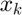, input  , disturbance
, disturbance  , and sampling time
, and sampling time  .
.
The double integrator system can be used as a simple model of a vehicle on a lane.
- The state is position and velocity of the vehicle.
- The vehicle is acceleration-controlled with restrictions on the maximum and minimum acceleration provided
- The stochastic disturbance affects its position and velocity accounting for unmodelled phenomena like slipping or engine model mismatch.
% System definition % ----------------- % discretization parameter T = 0.1; % define the system sys = LtiSystem('StateMatrix', [1, T; 0, 1], ... 'InputMatrix', [T^2/2; T], ... 'InputSpace', Polyhedron('lb', -0.1, 'ub', 0.1), ... 'DisturbanceMatrix', eye(2), ... 'Disturbance', RandomVector('Gaussian', zeros(2,1), 0.01*eye(2))); % Parameters for dynamic programming and visualization % ---------------------------------------------------- % Step sizes for gridding dyn_prog_xinc = 0.05; dyn_prog_uinc = 0.1; % Additionally, we need to specify thresholds of interest to compute the % stochastic viability set reach_set_thresholds = [0.2 0.5 0.9]; % For plotting purposes, we specify legend and axis limits axis_vec = [-1 1 -1 1]; legend_str={'Safety tube at k=0', 'Safety Probability $\geq 0.2$', ... 'Safety Probability $\geq 0.5$', 'Safety Probability $\geq 0.9$'};
Case 1: Stochastic viability problem
We are interested in assessing the safety of this double integrator system to stay within the safe set of 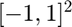.
For the vehicle in a lane example, we require controllers that maximize the probability of ensuring that the position stay within 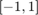 and the velocity with when the car at 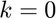 has some initial position and velocity in .
To perform this safety analysis, we need to do the following steps
- Provide parameters for dynamic programming like grid size and thresholds (if stochastic viability sets are of interest) [*Reused from above*]
- Construct the safety tube using 'viability' option (and plot it as well)
- Obtain the dynamic programming solution via SReachDynProg
- Obtain the stochastic viability sets at desired thresholds using getDynProgLevelSets2D
% Safety tube definition % ---------------------- % time horizon N = 5; % The viability problem is equivalent to a stochastic reachability of a target % tube of repeating safe sets safe_set = Polyhedron('lb', [-1, -1], 'ub', [1, 1]); safety_tube1 = Tube('viability', safe_set, N); % Plotting of safety tube % ----------------------- figure() hold on for time_indx = 0:N % Embed the 2-D safety sets in a 3-D space which is state-space x [0, N] safety_tube_at_time_indx = Polyhedron('H', ... [safety_tube1(time_indx+1).A, ... zeros(size(safety_tube1(time_indx+1).A,1),1), ... safety_tube1(time_indx+1).b], ... 'He',[0 0 1 time_indx]); plot(safety_tube_at_time_indx, 'alpha',0.25); end axis([axis_vec 0 N]) box on; grid on; xlabel('$x_1$','interpreter','latex'); ylabel('$x_2$','interpreter','latex'); zlabel('time'); title('Safety tube');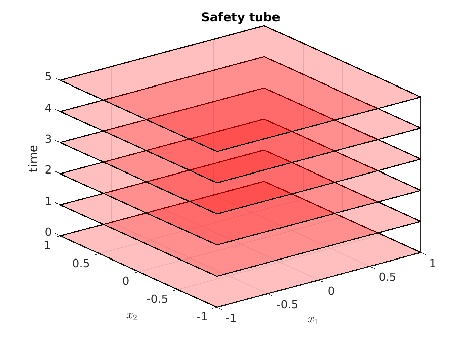
% Dynamic programming recursion via gridding % ------------------------------------------ tic; [prob_x1, cell_of_xvec_x1] = SReachDynProg('term', sys, dyn_prog_xinc, ... dyn_prog_uinc, safety_tube1); toc % Plotting of the optimal value function % -------------------------------------- % Visualization of the value function at k=0 (safety probability) figure(); x1vec = cell_of_xvec_x1{1}; x2vec = cell_of_xvec_x1{2}; surf(x1vec,x2vec,reshape(prob_x1,length(x2vec),length(x1vec))); axis([axis_vec 0 1]) xlabel('$x_1$','interpreter','latex'); ylabel('$x_2$','interpreter','latex'); zlabel('Safety probability') title('Optimal value function $V_{SR}^\ast(\cdot)$','interpreter','latex'); box on view(45, 45)
Elapsed time is 18.495988 seconds.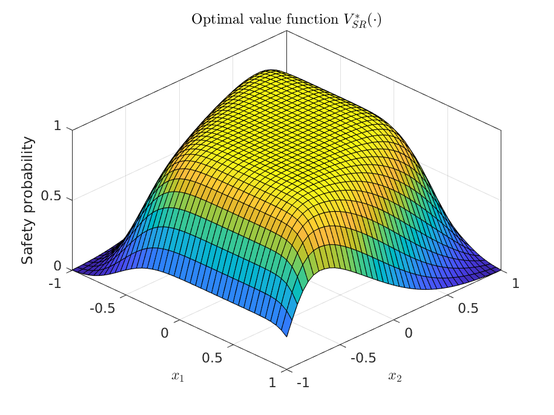
% Obtain the stochastic viability sets % ------------------------------------ poly_array1 = getDynProgLevelSets2D(cell_of_xvec_x1, prob_x1, ... reach_set_thresholds, safety_tube1); % Plotting of the stochastic viability sets % ----------------------------------------- % Visualization of the safe initial states --- Superlevel sets of safety % probability figure(); hold on; plot([safety_tube1(1), poly_array1]) xlabel('$x_1$','interpreter','latex'); ylabel('$x_2$','interpreter','latex'); box on axis(axis_vec) axis equal legend(legend_str) title('Stochastic viability sets $L_{SR}^\ast(\cdot)$','interpreter','latex');
Warning: MATLAB's contour matrix missed a corner! Adding (1, -1) to polytope vertex list for level=0.20. Warning: MATLAB's contour matrix missed a corner! Adding (-1, 1) to polytope vertex list for level=0.20.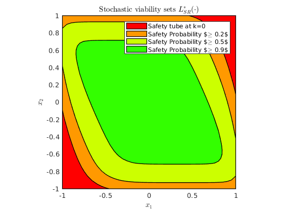
Case 2: Terminal hitting-time stochastic reach-avoid
Stochastic reach-avoid problems have a time-invariant safety set uptil time horizon (uptill 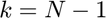), and a different target set at time horizon 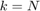.
Specifically, we are interested in assessing the safety of this double integrator system to stay within the safe set of for 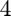 time steps and then reach 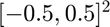. Here, the car at has some initial position and velocity in as before.
To perform this safety analysis, we need to do the following steps
- Provide parameters for dynamic programming like grid size and thresholds (if stochastic reach-avoid sets are of interest) [*Reused from above*]
- Construct the safety tube using 'reach-avoid' option (and plot it as well)
- Obtain the dynamic programming solution via SReachDynProg
- Obtain the stochastic reach-avoid sets at desired thresholds using getDynProgLevelSets2D
% Safety tube definition % ---------------------- % Safety tube is a generalization of the reach problem. The reach avoid % safety-tube is created by setting the first $N$ sets in the tube as the % |safe_set| and the final set as the |target_set|. % % time horizon N = 5; % The viability problem is equivalent to a stochastic reachability of a target % tube of repeating safe sets safe_set = Polyhedron('lb', [-1, -1], 'ub', [1, 1]); target_set = Polyhedron('lb', [-0.5, -0.5], 'ub', [0.5, 0.5]); safety_tube2 = Tube('reach-avoid', safe_set, target_set, N); % Plotting of safety tube % ----------------------- figure() hold on for time_indx = 0:N % Embed the 2-D safety sets in a 3-D space which is state-space x [0, N] safety_tube_at_time_indx = Polyhedron('H', ... [safety_tube2(time_indx+1).A, ... zeros(size(safety_tube2(time_indx+1).A,1),1), ... safety_tube2(time_indx+1).b], ... 'He',[0 0 1 time_indx]); plot(safety_tube_at_time_indx, 'alpha',0.25); end axis([axis_vec 0 N]) box on; grid on; xlabel('$x_1$','interpreter','latex'); ylabel('$x_2$','interpreter','latex'); zlabel('time'); title('Safety tube');

% Dynamic programming recursion via gridding % ------------------------------------------ tic; [prob_x2, cell_of_xvec_x2] = SReachDynProg('term', sys, dyn_prog_xinc, ... dyn_prog_uinc, safety_tube2); toc % Plotting of the optimal value function % -------------------------------------- % Visualization of the value function at k=0 (safety probability) figure(); x1vec = cell_of_xvec_x2{1}; x2vec = cell_of_xvec_x2{2}; axis([axis_vec 0 N]); surf(x1vec,x2vec,reshape(prob_x2,length(x2vec),length(x1vec))); xlabel('$x_1$','interpreter','latex'); ylabel('$x_2$','interpreter','latex'); zlabel('Safety probability') box on view(45, 45) title('Optimal value function $V_{SR}^\ast(\cdot)$','interpreter','latex');
Elapsed time is 19.003879 seconds.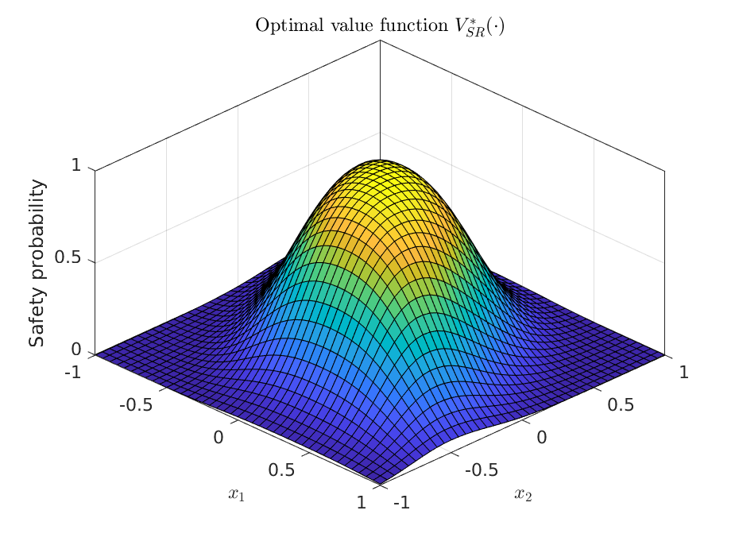
% Obtain the stochastic reach-avoid sets % -------------------------------------- poly_array2 = getDynProgLevelSets2D(cell_of_xvec_x2, prob_x2, ... reach_set_thresholds, safety_tube2); % Plotting of the stochastic reach-avoid sets % ------------------------------------------- % Visualization of the safe initial states --- Superlevel sets of safety % probability figure(); hold on; plot([safety_tube2(1) poly_array2]) box on xlabel('$x_1$','interpreter','latex'); ylabel('$x_2$','interpreter','latex'); axis(axis_vec); box on axis equal legend(legend_str) title('Stochastic reach-avoid sets $L_{SR}^\ast(\cdot)$','interpreter','latex');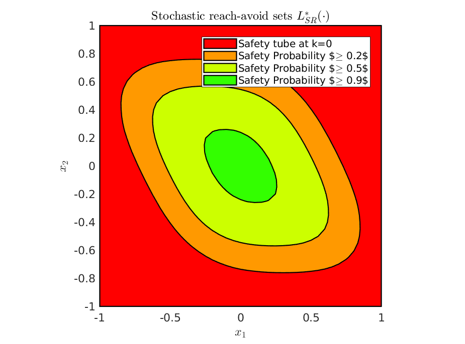
Case 3: Time-varying safety sets (Stochastic reachability of a target tube)
Stochastic reachability of a target tube has time-varying safety sets.
To perform this safety analysis, we need to do the following steps
- Provide parameters for dynamic programming like grid size and thresholds (if stochastic reach sets are of interest) [*Reused from above*]
- Construct the safety tube by constructing at piecemeal (and plot it as well)
- Obtain the dynamic programming solution via SReachDynProg
- Obtain the stochastic reach sets at desired thresholds using getDynProgLevelSets2D
% Safety tube definition % ---------------------- safety_tube3 = Tube(Polyhedron('lb', [-1, -1], 'ub', [1, 1]), ... Polyhedron('lb', [-0.5, -1], 'ub', [1, 0.5]), ... Polyhedron('lb', [-1, -1], 'ub', [0.5, 0.5]), ... Polyhedron('lb', [-1, -0.5], 'ub', [0.5, 1]), ... Polyhedron('lb', [-0.5, -0.5], 'ub', [1, 1])); N = length(safety_tube3)-1; % Plotting of safety tube % ----------------------- figure() hold on for time_indx = 0:N % Embed the 2-D safety sets in a 3-D space which is state-space x [0, N] safety_tube_at_time_indx = Polyhedron('H', ... [safety_tube3(time_indx+1).A, ... zeros(size(safety_tube3(time_indx+1).A,1),1), ... safety_tube3(time_indx+1).b], ... 'He',[0 0 1 time_indx]); plot(safety_tube_at_time_indx, 'alpha',0.25); end axis([axis_vec 0 N]) box on; grid on; xlabel('$x_1$','interpreter','latex'); ylabel('$x_2$','interpreter','latex'); zlabel('time'); title('Safety tube'); view([-25 60]);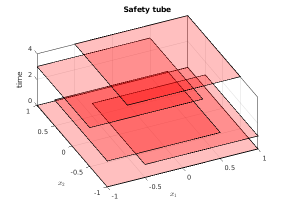
% Dynamic programming recursion via gridding % ------------------------------------------ tic; [prob_x3, cell_of_xvec_x3] = SReachDynProg('term', sys, dyn_prog_xinc, ... dyn_prog_uinc, safety_tube3); toc % Plotting of the optimal value function % -------------------------------------- % Visualization of the value function at k=0 (safety probability) figure(); x1vec = cell_of_xvec_x3{1}; x2vec = cell_of_xvec_x3{2}; axis([axis_vec 0 N]); surf(x1vec,x2vec,reshape(prob_x3,length(x2vec),length(x1vec))); xlabel('$x_1$','interpreter','latex'); ylabel('$x_2$','interpreter','latex'); zlabel('Safety probability') box on view(45, 45) title('Optimal value function $V_{SR}^\ast(\cdot)$','interpreter','latex');
Elapsed time is 10.287044 seconds.

% Obtain the stochastic reach sets % -------------------------------- poly_array3 = getDynProgLevelSets2D(cell_of_xvec_x3, prob_x3, ... reach_set_thresholds, safety_tube3); % Plotting of the stochastic reach sets % ------------------------------------- % Visualization of the safe initial states --- Superlevel sets of safety % probability figure(); hold on; plot([safety_tube3(1) poly_array3]) box on xlabel('$x_1$','interpreter','latex'); ylabel('$x_2$','interpreter','latex'); axis(axis_vec); box on axis equal legend(legend_str) title('Stochastic reach sets $L_{SR}^\ast(\cdot)$','interpreter','latex');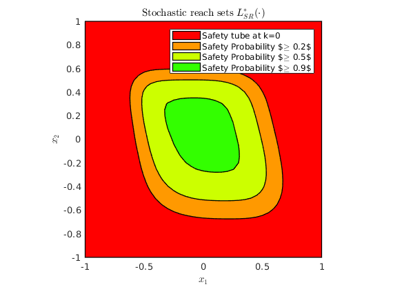